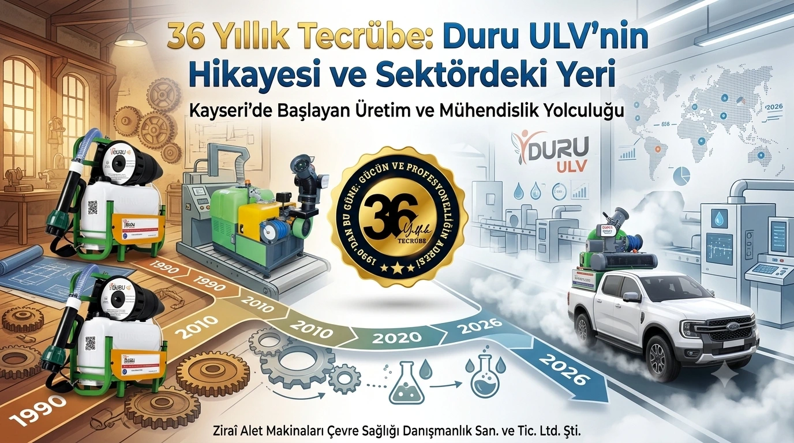
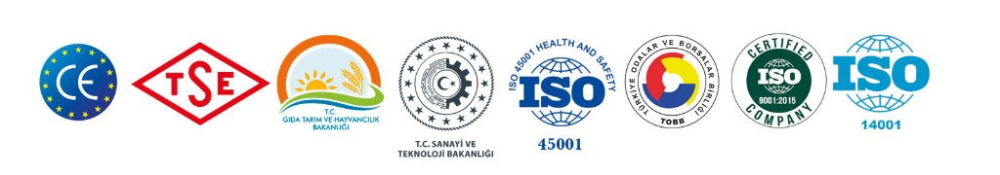

1990'dan Bugüne: Bir Üretim Hikayesi
Duru ULV Teknoloji Sistemleri'nin hikayesi, 1990 yılında Kayseri'de başlayan ve bugün 36 yıllık bir üretim tecrübesine ulaşan bir mühendislik yolculuğudur. Ziraî Alet Makinaları Çevre Sağlığı Danışmanlık San. ve Tic. Ltd. Şti. ticari unvanıyla faaliyet gösteren firmamız, dezenfeksiyon, haşere kontrolü ve tarımsal ilaçlama alanında Ultra Low Volume (ULV) teknolojisi üzerine uzmanlaşmış bir Türk üretici firmadır.

Neden "Üretici" Olmak Önemli?
Sektörde birçok firma, başka ülkelerde üretilen ekipmanları Türkiye'ye getirip satan bayi konumundadır. Duru ULV ise tasarımdan üretime, test süreçlerinden satış sonrası teknik desteğe kadar tüm süreci kendi bünyesinde yürüten bir üretici firmadır. Bu, üç somut avantaj sağlar: birincisi, müşteri ihtiyaçlarına göre özelleştirme imkânı; ikincisi, yedek parça ve teknik destek süreçlerinde aracısız, doğrudan iletişim; üçüncüsü, fiyat ve teslimat süreçlerinde daha şeffaf bir tedarik zinciri.
Sertifikalar ve Kalite Güvencesi
36 yıllık tecrübemiz boyunca geliştirdiğimiz Duru U.L.V. cihazları, uluslararası testlerde %99,999 etkinlik oranıyla belgelenmiştir. CE, TSE, ISO 45001 (İş Sağlığı ve Güvenliği), ISO 9001 (Kalite Yönetimi), ISO 14001 (Çevre Yönetimi) sertifikalarına sahip olan firmamız, T.C. Gıda Tarım ve Hayvancılık Bakanlığı ile T.C. Sanayi ve Teknoloji Bakanlığı'nın talep ettiği tüm resmi belgeleri de eksiksiz şekilde sağlamaktadır. Bu sertifikalar, özellikle belediye ve kamu kurumu ihalelerinde firmamızı güvenilir bir tedarikçi konumuna taşımaktadır.
Ürün Ailesi: Her Ölçeğe Uygun Çözümler
Duru ULV ürün ailesi, araç üstü ilaçlama makinelerinden sera tipi sistemlere, sırt tipi taşınabilir cihazlardan el tipi dezenfeksiyon makinelerine kadar geniş bir yelpazeyi kapsar. Bu çeşitlilik, belediyelerden hastanelere, tarım işletmelerinden fabrikalara kadar her ölçekteki kurumun ihtiyacına uygun bir çözüm sunabilmemizi sağlar.
Garanti ve Yedek Parça Taahhüdü
Her Duru cihazı, 2 yıl cihaz garantisi ve 10 yıl yedek parça garantisi ile satılmaktadır. Bu uzun vadeli taahhüt, müşterilerimizin ekipman yatırımlarının uzun yıllar boyunca sorunsuz çalışmaya devam edeceğinin bir güvencesidir.
